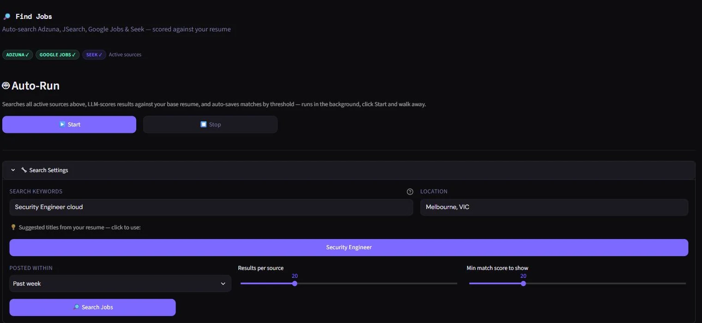
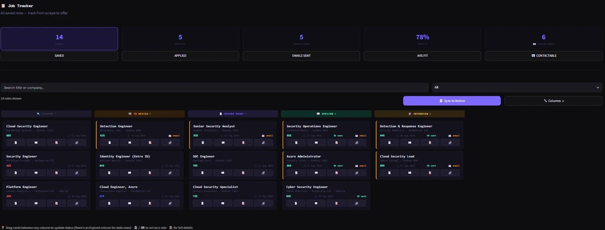
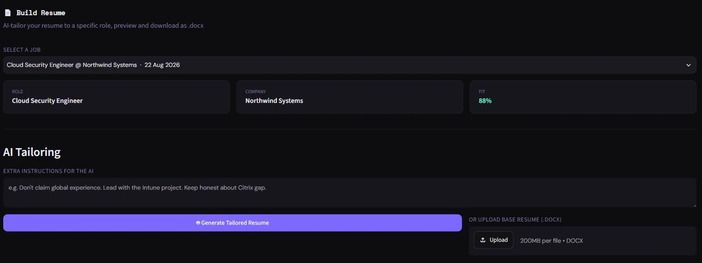
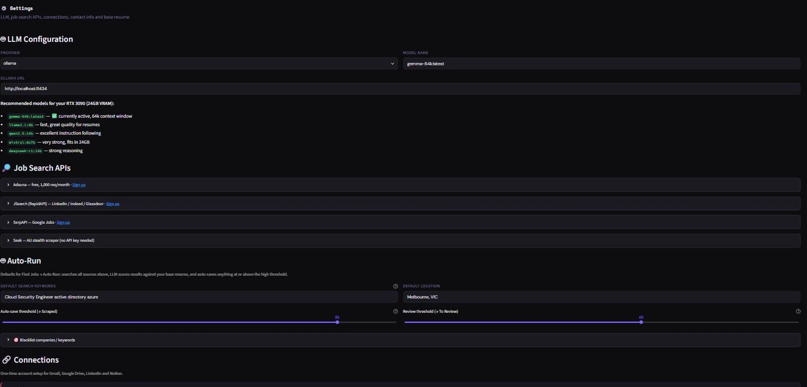
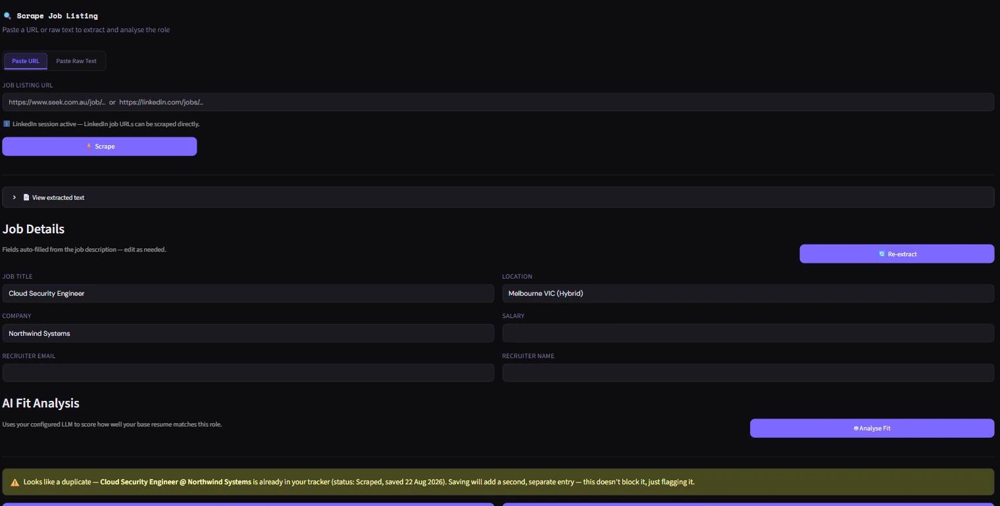
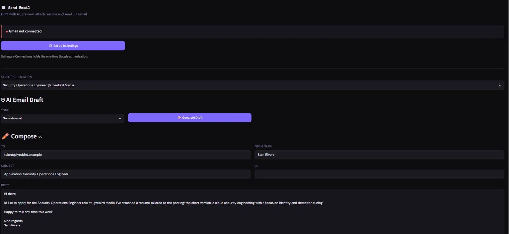

JobDash: Resume Tailor AI
A full local LLM application, engineered to stay cheap and fast. It searches four job boards, scores every result against your resume on your own GPU, tailors the resume to the ones worth applying for, and tracks the rest on a Kanban board. The part worth reading is what it does to avoid calling the model hundreds of times per search. No cloud database, no hosted inference.
Applying to jobs is mostly repetitive text work: read a listing, decide if it's a match, rewrite a resume to fit, then chase the actual sending. JobDash puts the whole loop in one local dashboard instead of five browser tabs and a folder of resume copies.
Paste a job URL, get a fit score against your base resume, generate a tailored version
with a model running on your own GPU (or a cloud model via OpenRouter), download it as a
real formatted .docx, and email it, without leaving the app.
What it does
- Searches four job boards at once: Adzuna, JSearch, Google Jobs via SerpAPI, and a keyless Playwright scrape of Seek. Each has a different free-tier ceiling, so the source list is configurable rather than assumed.
- Scores every result against your resume: a keyword prefilter runs first and an LLM scores the survivors, so a broad search spends model time only on plausible matches.
- Runs unattended: Auto-Run searches every active source on a background thread, scores the results, and saves anything above a fit threshold straight into the tracker. Start it and walk away.
- Tailors the resume: a local Ollama model or a cloud one via OpenRouter rewrites sections against the listing, editable in-app before export.
-
Exports a real .docx:
python-docxrenders a token-based template, then checks whether the result actually fits on one page. - Tracks and mirrors: a Kanban board backed by a local JSON file, with a one-way push to Notion so the pipeline is browsable from a phone. JobDash stays the source of truth.

How it's put together
| Layer | Tools | Job |
|---|---|---|
| UI | Streamlit, hand-rolled Kanban component | Dashboard, dark theme |
| Job sources | Adzuna, JSearch, SerpAPI, Seek | Four APIs and one keyless scrape behind one client |
| Scraping | Playwright, BeautifulSoup4 | Listing pages, plus a persistent Chromium profile for logged-in LinkedIn |
| Auto-Run | Daemon thread + st.cache_resource | Search, score and save without blocking the UI |
| LLM | Ollama (local) or OpenRouter (cloud), via LangChain | Resume tailoring, fit scoring; the container bridges to the host's existing Ollama over host.docker.internal:11434 rather than shipping its own |
| Resume output | python-docx | Token-templated .docx with a one-page-fit heuristic |
| Gmail API (OAuth2) | Send from inside the app | |
| Storage | Local JSON, atomic writes | Job tracker state, no external DB; one-way mirror to Notion |
| Deploy | venv + setup script, one-click .bat, or Docker Compose | Three ways to run it |





Challenges & what I learned
A background thread has nowhere to live in Streamlit
Streamlit reruns the whole script on every interaction, and
st.session_state is discarded when a session ends, so a worker parked there
survives a tab refresh as an orphaned thread nothing can stop. The thread, its stop event and
its progress log live in a st.cache_resource singleton instead, which is
process-wide; the worker never calls a st.* API, because those are bound to the
main thread's script-run context.
Two threads writing one JSON file will silently clobber each other
The worker saves matches while the UI saves a card the user just dragged, and the store is a
single file. Every write goes through one lock and lands atomically, temp file then
os.replace, so a crash mid-write cannot truncate the store. Jobs are addressed
by a stable id rather than list position, so a concurrent reorder cannot update the wrong
record.
A job board's API description is often marketing copy
Adzuna in particular returns a one-line teaser where the real responsibilities and requirements only exist on the source page, which makes every fit score downstream a score against an advert. Anything under 400 characters is now treated as a teaser and re-fetched with the same scraper the manual path uses, falling back to the short text on any failure, so one uncooperative site cannot sink a whole search.
"Fits on one page" has no cheap correct answer
A generated resume that spills onto a second page is a bad resume, but nothing in
python-docx knows the rendered page count. Three paths are tried in order of
accuracy, none of them installed as a dependency: drive a hidden Word process through pywin32
and read its own page count, or convert via LibreOffice and count PDF pages, or fall back to
estimating wrapped lines against usable page height.
Sometimes the fix is a first-class manual path, not a smarter bot
Playwright hits a login wall on LinkedIn and no amount of tuning gets past it reliably, so a raw-text paste is an equal input path rather than a fallback. For repeat use there is now a second option that does not fight the block either: a persistent Chromium profile you log into once, reused by the scraper.